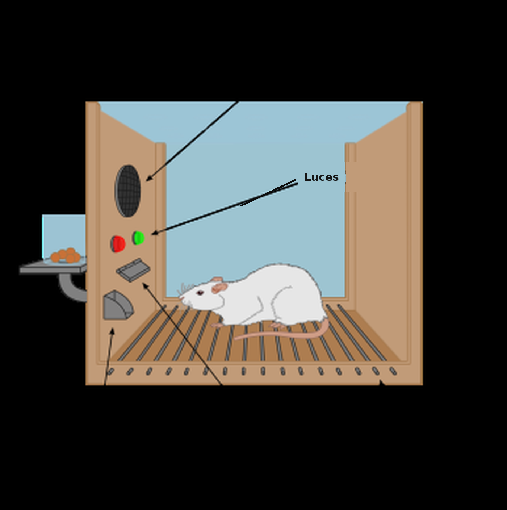
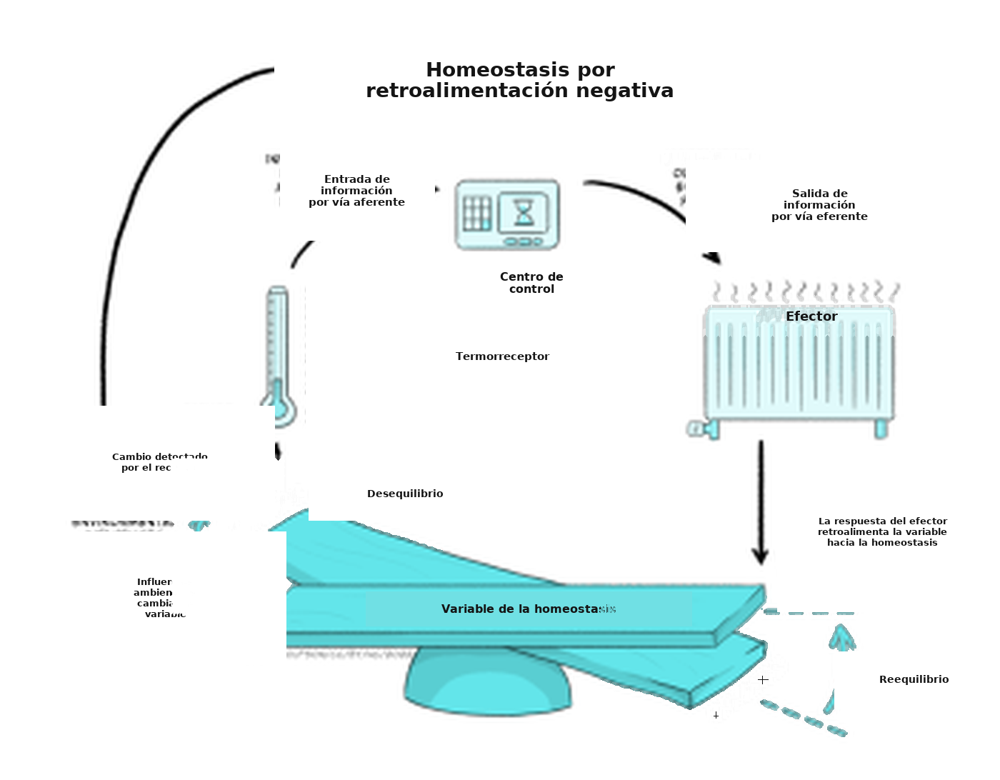
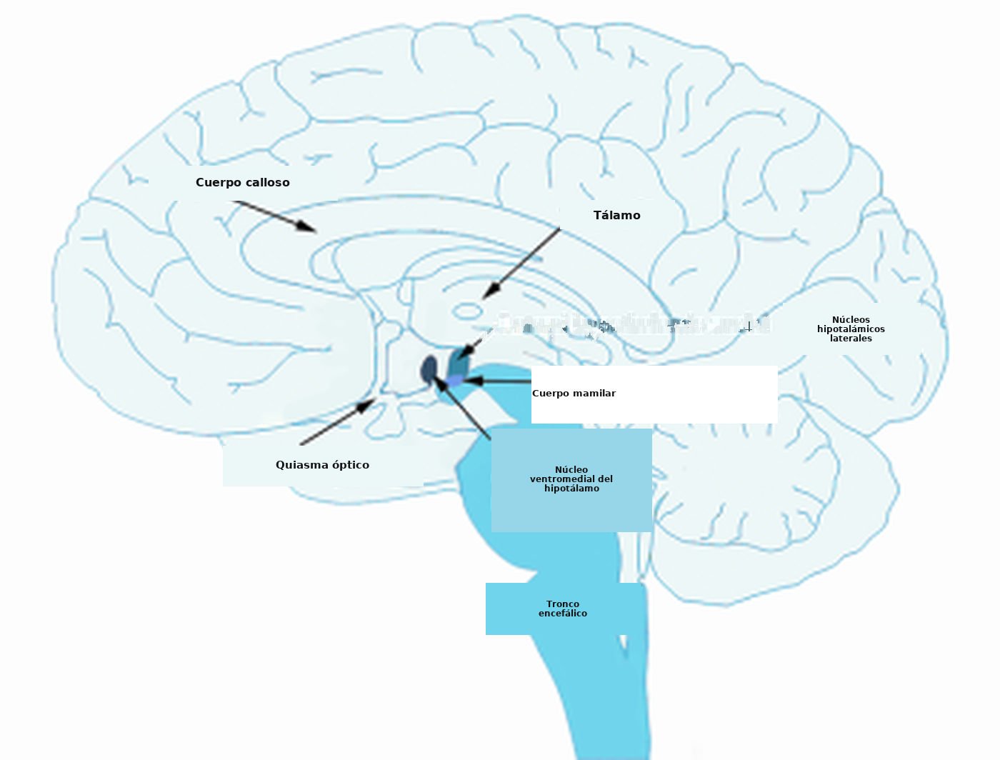
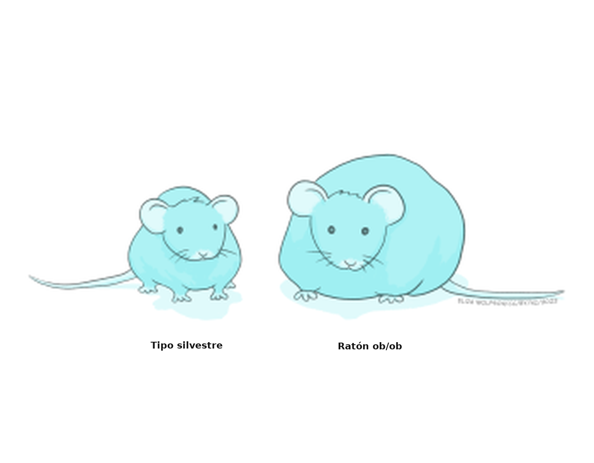
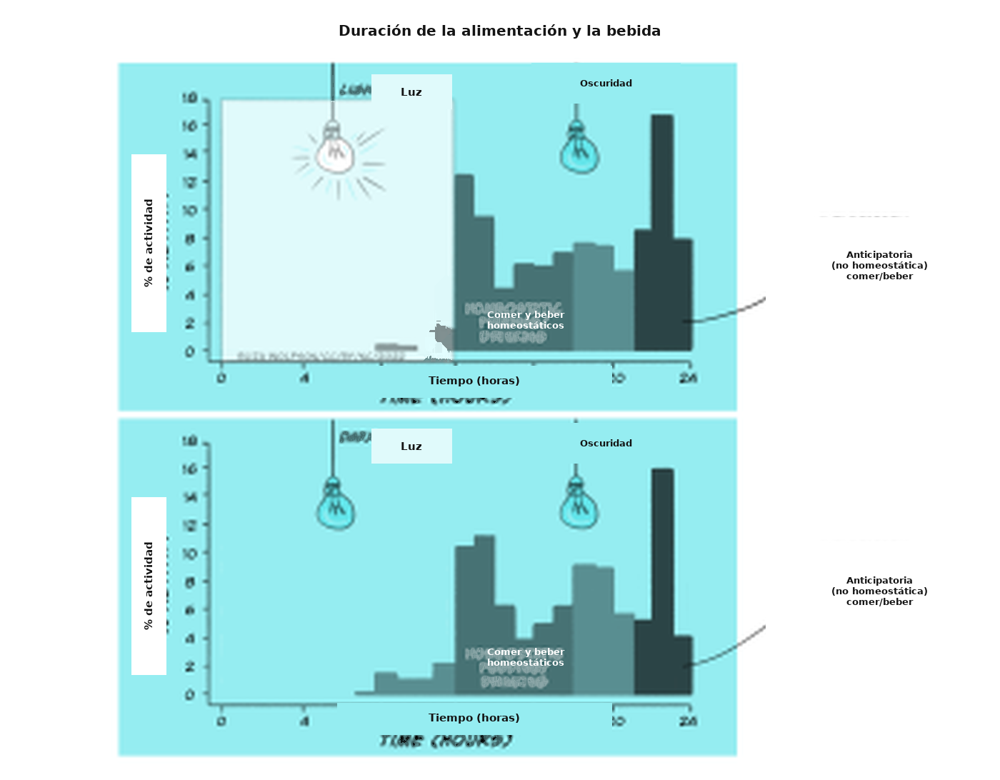
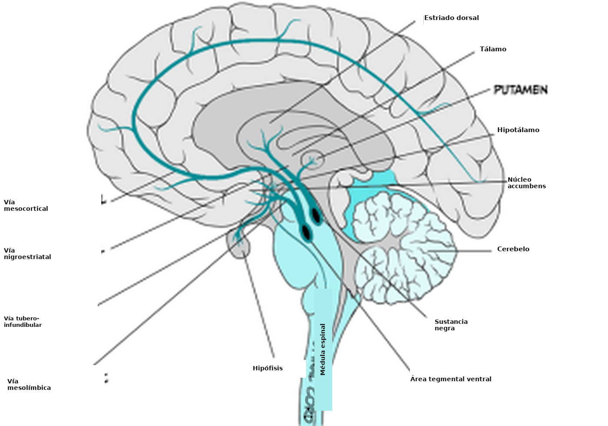

Conducta motivada: nutrición y alimentación
Objetivos de aprendizaje
Al terminar este capítulo, vas a poder comprender los procesos que intervienen en:
- la mecánica básica de un sistema homeostático, incluida la regulación de la temperatura;
- los mecanismos del encéfalo y del cuerpo, incluido el intestino, que participan en la bebida y en la alimentación;
- el modo en que los mecanismos homeostáticos, que regulan variables fisiológicas alrededor de un punto de ajuste, pueden desregularse y apartarse de ese punto, incluidos los mecanismos de aprendizaje y otros más complejos que involucran el deseo y lo hedónico.
¿Por qué nos levantamos a la mañana? Es una pregunta que se escucha a menudo sobre la causa de lo que hacemos, pero ¿por qué nos levantamos, en efecto?
Una cadena causal compleja impulsa la conducta de levantarse. Intervienen mecanismos fisiológicos básicos de regulación, con núcleos del tronco encefálico y fotosensores hipotalámicos que regulan el ritmo circadiano de sueño y vigilia. También intervienen mecanismos hormonales del intestino que, otra vez en los núcleos hipotalámicos, señalan el hambre y la necesidad o el deseo de comer. Hay mecanismos maternos, por ejemplo la oxitocina, que impulsan el instinto de amamantar. Hay mecanismos dopaminérgicos del prosencéfalo que regulan el deseo de obtener recompensas en el trabajo, es decir, un salario. Y hay expectativas cognitivas más difusas y de largo plazo sobre lo que pueden traernos el día, la semana, el año y la carrera.
El estudio de la motivación atraviesa distintos dominios de la psicología para entender los mecanismos principales que causan nuestras conductas. Esas conductas pueden ser regulatorias y esenciales, como beber, alimentarse, luchar y desear el sexo, o más complejas y de origen psicológico. Vamos a centrarnos sobre todo en la alimentación. Vamos a mencionar brevemente la regulación de la temperatura, como modelo de sistema fisiológico regulatorio que sostiene la acción motivada, y la bebida, como conducta motivada orientada a mantener la hidratación para que la función fisiológica, neuronal y psicológica sea óptima.
La motivación puede definirse como un estado interno que explica por qué actuamos o por qué aprendemos a actuar. Su estudio se concentra en qué causa, impulsa y da energía a la conducta. Por eso podemos hablar de estados motivacionales, impulsos motivacionales y deseos motivacionales. En términos amplios hay dos clases de conductas motivadas: las de naturaleza regulatoria y las de naturaleza no regulatoria.
En la base de las conductas motivadas esenciales para la supervivencia están los llamados mecanismos regulatorios homeostáticos. Regulan la sed y, con ella, el nivel de hidratación o de deshidratación. También regulan el hambre y la saciedad y, al hacerlo, los niveles de nutrientes, entre ellos hidratos de carbono, grasas, vitaminas y proteínas. Estos mecanismos incluyen procesos fisiológicos complejos por los que los nutrientes, el agua y las sales se absorben, se distribuyen, se liberan y se excretan. También incluyen mecanismos conductuales consumatorios, es decir beber y comer, y conductas apetitivas que nos orientan hacia lugares del entorno y después nos hacen trabajar para conseguir el agua y los nutrientes que vamos a consumir.
Pero los mecanismos homeostáticos regulatorios, por esenciales que sean, son solo una parte de la historia de la motivación. No comemos únicamente porque nos falte nutrición, ni bebemos solo cuando estamos deshidratados. No tenemos sexo solo para procrear, ni corremos solo cuando tenemos miedo. La motivación humana a menudo no es regulatoria y exige explicaciones que vayan más allá de la homeostasis. Vamos a explorar estas «motivaciones superiores», que dependen de un conjunto complejo de estructuras encefálicas que forman un anillo alrededor del tálamo en el prosencéfalo humano y no humano. Paul Broca las describió temprano en la historia de la neurociencia. Broca también es conocido por identificar el área temporal de producción del habla que lleva su nombre. Después ampliaron esa descripción Papez, McClean y, más recientemente, Frederik Toates y Kent Berridge, entre otras personas.
Para considerar los mecanismos regulatorios básicos de la alimentación y de la sed, precedidos por una mirada muy breve a cómo el cuerpo, el encéfalo y los termostatos de las casas y las oficinas regulan la temperatura, hay que volver a investigaciones de comienzos y de mediados del siglo pasado. En su mayoría participaron científicos de Estados Unidos, del Reino Unido y de Europa occidental. Con las décadas, el campo se amplió hacia una comunidad científica diversa e inclusiva. En el Recuadro 1 consideramos a B. F. Skinner. Era un científico típico de su generación, porque era un profesor varón estadounidense (caucásico) en Harvard. También era atípico, o inesperado, porque se oponía abiertamente a estudiar los mecanismos y los estados motivacionales como objetos genuinos de la investigación científica en psicología.
La motivación como mecanismo homeostático de retroalimentación negativa
Recuadro 1. El conductismo y el estudio de la motivación
Una herramienta habitual de la psicología experimental para estudiar procesos motivacionales, sobre todo en animales no humanos, es la cámara de condicionamiento operante o instrumental. Con cierta ironía, dado que se oponía al estudio de la motivación, la diseñó y la desarrolló el científico estadounidense B. F. Skinner (1904-1990). La usó en sus estudios fundamentales de análisis experimental de la conducta para mostrar que «la conducta es moldeada y mantenida por sus consecuencias». Si, por ejemplo, la consecuencia de una conducta suele ser positiva porque lleva a un resultado recompensante, como entregar alimento a un animal hambriento, o porque permite evitar un resultado desagradable, como un sonido fuerte, el animal aprende a repetir esa conducta. Es decir, la conducta se refuerza y el resultado se considera un reforzador de la conducta. Sin embargo, Skinner también creía que intentar entender los estados internos que pueden hacer que un animal busque más el resultado reforzante en unos casos que en otros, por ejemplo buscar alimento cuando tiene hambre y no cuando está saciado, distrae de comprender el efecto del resultado reforzante, o del reforzador, sobre la conducta. Escribió que «los términos mentalistas asociados con los reforzadores, y con los estados en los que los reforzadores son eficaces, dificultan detectar las relaciones funcionales» (B. F. Skinner, About Behaviorism, 1974; traducción nuestra).
Aun así, los métodos que Skinner desarrolló para estudiar cómo el resultado de una conducta afecta si esa conducta se aprende y se repite se usan todavía hoy para delimitar la motivación que hay detrás de ejecutar una conducta.

Las cámaras de condicionamiento operante, o cajas de Skinner, suelen tener una palanca y un recipiente dispensador de bolitas de alimento o de azúcar en uno de los lados. También suelen tener luces de señal de distintos colores y altavoces por los que se pueden emitir tonos. Pueden incluir una rejilla electrificada por la que se administran descargas eléctricas leves, es decir estímulos negativos. En los experimentos, los animales aprenden que presionar la palanca produce la entrega de recompensas alimentarias. En otros, pueden aprender que un tono o una luz determinada señalan que el alimento está disponible en el recipiente.
Quienes investigan la motivación pueden explorar qué partes del encéfalo participan en presionar la palanca para obtener alimento cuando el animal tiene hambre y debe aliviar ese estado motivacional interno. Es una conducta motivada regulatoria. En otros experimentos se puede explorar cómo otros factores, como las asociaciones aprendidas entre una luz o un tono y el alimento, inician la presión de la palanca incluso en un animal que está lleno. Así se estudian regiones encefálicas implicadas en una conducta motivada que no es regulatoria.
Clark Hull (1884-1952) propuso que la conducta motivada está determinada o impulsada, principalmente, por la necesidad de aliviar un estado interno de privación. Dicho de manera simple, el alimento refuerza una conducta de alimentación si, y porque, alivia un estado de hambre. Así, el hambre es el estado interno de privación y, por lo tanto, la motivación para comer. La teoría de la reducción del impulso de Hull (1943) subrayó la importancia de mantener la homeostasis como impulso o motivación de la conducta. Si esa homeostasis, o el equilibrio del medio interno del organismo, se perdía, aumentaba la activación y esa activación iniciaba una acción para recuperar el equilibrio. La meta del organismo es permanecer en homeostasis y reducir los impulsos o las motivaciones que surgen de un desequilibrio del sistema, es decir, reducir la activación.
El organismo puede restaurar el equilibrio de su medio interno si actúa para minimizar la diferencia entre su estado actual y un punto de ajuste. Ese punto es aquel en el que el organismo quiere estar para hallarse en equilibrio y funcionar de manera óptima. Para que el cuerpo funcione bien, ciertas variables tienen que mantenerse dentro de límites estrechos. Las personas tenemos puntos de ajuste óptimos para la temperatura corporal: 36,5-37,5 grados Celsius (°C). También los tenemos para el nivel de hidratación y para los niveles de distintos nutrientes. Los sistemas que controlan la temperatura corporal, la hidratación y los nutrientes son sistemas homeostáticos: llevan el sistema hacia el equilibrio en puntos de ajuste determinados. Si el estado del cuerpo se aparta de esos puntos, se activan los procesos homeostáticos que los controlan. Así pueden ponerse en marcha acciones y conductas, como ponerse una campera cuando hace frío y baja la temperatura corporal, o moverse a un lugar sombreado o más fresco cuando hace calor y la temperatura sube. También pueden activarse mecanismos fisiológicos que no están bajo control consciente, como las respuestas inmunitarias, para restaurar el equilibrio.
Estas primeras ideas de reducción del impulso sobre lo que motiva la conducta se apoyaban en la retroalimentación negativa propuesta por Walter Cannon (1871-1945). Cannon fue médico e investigador durante la Primera Guerra Mundial, y propuso que los sistemas homeostáticos mantienen el equilibrio mediante retroalimentación negativa. La retroalimentación negativa es un proceso por el cual el efecto producido por una acción sirve para disminuir o terminar esa acción. Es el modo principal por el que los sistemas homeostáticos pueden reducir la diferencia entre el punto en el que el cuerpo está y el punto de ajuste ideal en el que el sistema quiere estar. Veamos cómo funcionan estos procesos:

La Figura 5.22 muestra cómo los bucles de retroalimentación negativa mantienen la homeostasis.
En la parte inferior de la imagen se ve la variable fisiológica que debe permanecer dentro de límites estrechos respecto del punto de ajuste, para que el equilibrio no se incline hacia un lado ni hacia el otro. Si usamos el ejemplo de la temperatura corporal, el punto de ajuste está entre 36,5 °C y 37,5 °C, porque esa es la temperatura corporal normal de las personas, a la que los procesos fisiológicos funcionan de manera óptima. El sistema también tiene sensores o receptores. Miden cuál es la temperatura corporal real. La información sobre esa temperatura suele enviarse a un sistema de control que puede vigilar las desviaciones respecto del punto de ajuste. Si hay desviaciones y el equilibrio se inclina hacia un lado o hacia el otro, el sistema de control envía esa información a la parte efectora, para que se inicien conductas correctoras o respuestas fisiológicas y la temperatura vuelva a los márgenes estrechos de la normalidad. En el control de la temperatura, esas respuestas pueden incluir conductas como ponerse o sacarse ropa, y respuestas fisiológicas como la sudoración y la vasodilatación de los vasos periféricos para enfriar el cuerpo, o la vasoconstricción periférica y el tiritar para aumentar la temperatura central.
Así funciona también el termostato de una casa. Si la temperatura ideal o buscada se fijó en 21 °C y el día está frío y ventoso, el termostato muestra la temperatura buscada (21 °C) y una temperatura real (por ejemplo, 18 °C). Como la temperatura real del sensor se aparta de la buscada, la caldera, que es el efector, empieza a funcionar, enciende los radiadores y devuelve la casa a 21 °C. En ese punto, la caldera se apaga. Conceptualmente, así pensamos los sistemas fisiológicos homeostáticos del cuerpo que usan retroalimentación negativa para restaurar y mantener el equilibrio.
Así, un sistema homeostático, o un sistema fisiológico que depende de la homeostasis, requiere una variable del sistema controlada por él, por ejemplo la temperatura, la hidratación o los nutrientes. Esa variable debe permanecer dentro de límites estrechos de un punto de ajuste para que el sistema funcione bien: por ejemplo, 36,5-37,5 °C para la temperatura corporal. Los sensores (receptores) miden el valor real de la variable y transmiten esa información a un centro de control, que puede detectar desviaciones respecto del punto de ajuste. Si se detectan desviaciones, el centro de control transmite la información al sistema efector, que inicia los procesos conductuales o fisiológicos necesarios para cambiar la variable y restaurar la homeostasis.
Motivación para comer o dejar de comer y mantener la homeostasis
Recuadro 2. ¿Cómo usa el cuerpo la energía y cómo la extrae de los alimentos?
El cuerpo usa energía por tres razones principales.
La mayor parte de la energía que incorporamos con los alimentos se usa para mantener la tasa metabólica basal (TMB; BMR en inglés). Así, el 55 % de la energía se destina a mantener el calor corporal y otras funciones básicas del organismo, por ejemplo la respiración y la circulación de la sangre. La proporción de energía usada para mantener la TMB varía según el tamaño del cuerpo. Los elefantes, por ejemplo, consumen más energía para mantener las funciones básicas que los ratones. De ese 55 %, el hígado usa el 27 % y el encéfalo el 19 %. Ese 19 % incluye la energía de la señalización neuronal y la de los procesos básicos de mantenimiento.
La digestión de los alimentos y los procesos de extracción de nutrientes usan el 33 % de la energía que entra con la comida.
Por último, el 12-13 % de la energía que incorporamos se usa como energía para la conducta activa. Ese porcentaje varía según el nivel de ejercicio o de actividad. Si vamos al gimnasio, por ejemplo, vamos a usar más que el 13 %. Como solo una fracción de la energía que consumimos se utiliza en la conducta activa, el ejercicio es una buena manera de bajar de peso, pero para adelgazar también suelen hacer falta reducciones de la ingesta. La energía que no se usa para mantener la TMB, para la digestión o para la actividad se almacena como reserva, en el hígado a corto plazo o en el tejido graso a largo plazo.
La glucosa es el combustible principal, o la forma de energía principal, que usa el cuerpo. Proviene de tres fuentes de la dieta:
- hidratos de carbono (azúcares),
- aminoácidos (los bloques con los que se construyen las proteínas) y
- lípidos (grasas).
Los hidratos de carbono se degradan y se convierten en glucosa apenas el cuerpo los incorpora. La glucosa, a su vez, es la fuente principal de energía del encéfalo, de los músculos y del resto del cuerpo. El exceso de glucosa se almacena como glucógeno en el hígado. Es una reserva de energía a corto plazo, que podemos usar cuando hace falta mediante un proceso en el que interviene el páncreas. Al detectar un aumento de la glucosa en sangre, el páncreas libera insulina, que convierte el exceso de glucosa en glucógeno y lo almacena en el hígado. Si necesitamos esa energía, el páncreas secreta glucagón para convertir el glucógeno otra vez en glucosa, que entonces usan el cuerpo y el encéfalo. Los hidratos de carbono no son la única fuente posible de energía, porque las proteínas y las grasas también pueden degradarse para formar glucosa. En eso se basan muchas dietas bajas en carbohidratos: al reducir la ingesta de hidratos de carbono, la persona tiene que obtener la glucosa de los aminoácidos y, sobre todo, de las grasas.
Los aminoácidos provienen de las proteínas y aportan los bloques básicos que las células usan para fabricar proteínas nuevas, con las que realizan trabajos especializados o generales dentro de una célula. También son una fuente de glucosa, porque pueden convertirse en glicerol y este, a su vez, en glucosa. De los veinte aminoácidos, nueve son esenciales: no podemos producirlos y tenemos que incorporarlos con la dieta. El triptófano, por ejemplo, es un aminoácido esencial y está en la avena, las bananas, las ciruelas pasas, la leche, el atún, el queso, el pan, el pollo, el pavo, el maní y el chocolate. Es el único precursor del neurotransmisor serotonina. La posibilidad de cambiar la tasa de síntesis de serotonina al manipular los niveles de triptófano es la base de un conjunto amplio de investigaciones sobre la relación entre la desregulación de la serotonina y el estado de ánimo, la conducta y la cognición (Richard et al., 2009, como revisión).
Por último, los lípidos o grasas también pueden convertirse en glucosa, y además son bloques esenciales de las células: forman la bicapa lipídica de la membrana celular. La glucosa también puede almacenarse a largo plazo en el tejido graso, o tejido adiposo. Las grasas se almacenan en ese tejido, o se convierten en ácidos grasos o en glicerol. El glicerol, a su vez, puede convertirse en glucosa para obtener energía.
Los hidratos de carbono no son esenciales, pero los aminoácidos y los lípidos sí lo son como bloques de construcción, igual que los minerales y las vitaminas. Los minerales y las vitaminas también tienen que incorporarse con la dieta o con suplementos. Son esenciales para el funcionamiento normal del cuerpo, pero no son una fuente de energía.
Si la motivación para comer o para dejar de comer resulta de la necesidad de aliviar, respectivamente, un estado negativo de hambre o de sentirse lleno, se plantean estas preguntas:
- ¿Cuál es la variable del sistema que tiene que permanecer en homeostasis?
- ¿Qué sensores o receptores miden esa variable?
- ¿Hay un mecanismo efector que cambie los procesos metabólicos, o que inicie o termine la conducta de alimentación, para que el sistema recupere el equilibrio?
- Si lo hay, ¿ese mecanismo efector está en una parte determinada del cuerpo o del encéfalo?
Como la glucosa es la fuente principal de energía del cuerpo, tendría sentido que existiera un sistema homeostático que regulara la cantidad de glucosa.
La idea de que el metabolismo de la glucosa cumple un papel clave en el control del hambre, de la saciedad y de la regulación del balance energético fue propuesta primero por Anton Julius Carlson (1916). Después, Jean Mayer la formalizó como teoría glucostática del control de la alimentación (1954; 1955). Según esta teoría, la variable del sistema que debe mantenerse dentro de límites estrechos es la concentración de glucosa en la sangre. Campfield y Smith (2003) registraron, a lo largo del tiempo, los cambios de la concentración de glucosa en sangre de ratas, y encontraron que una caída de la glucosa se correlacionaba con el inicio de la comida. Así, cuando la concentración disminuía, el animal empezaba a alimentarse, y eso hacía subir la glucosa en sangre.
La teoría glucostática del control de la alimentación propuso que el control del apetito a corto plazo, o el empezar y dejar de comer, está mediado por desviaciones respecto de un punto de ajuste hipotético de la glucosa en sangre. Otras propuestas tomaron como punto de ajuste clave las concentraciones de glucosa en el encéfalo. En cuanto a la regulación del peso a largo plazo, que es distinta del control del apetito a corto plazo mediado por la glucosa, la teoría lipostática sugirió que, a largo plazo, el cuerpo intenta mantener un nivel óptimo de grasa corporal. Estas teorías no se excluyen, porque tratan el control del apetito a corto y a largo plazo, y podrían complementarse. Puede ser que el cuerpo regule varias variables de manera homeostática.
Si las desviaciones respecto de las concentraciones óptimas de glucosa en la sangre o en el encéfalo desencadenan impulsos motivacionales regulatorios para comer o para dejar de comer, ¿qué parte del encéfalo o del cuerpo constituye el mecanismo efector?
Según el modelo de doble centro (Stellar, 1954), dos áreas del hipotálamo, el hipotálamo lateral y el hipotálamo ventromedial, se consideraban los centros dedicados del hambre y de la saciedad, o centros de inicio y de detención de la alimentación. El hipotálamo lateral es un grupo de células del hipotálamo alejadas de la línea media del encéfalo. El hipotálamo ventromedial es un grupo de células cercano a la línea media (medial) y hacia la parte inferior (ventral) del hipotálamo.

El modelo se basó en estudios de lesiones. Las lesiones bilaterales del hipotálamo ventromedial hacían que el animal empezara a comer y a aumentar de peso (Hetherington y Ranson, 1942; Brobeck, Tepperman y Long, 1943). Se razonó, entonces, que si eliminar esa área inicia la conducta de alimentación, el área tiene que ser responsable de detenerla. A la inversa, las lesiones bilaterales del hipotálamo lateral hacían que el animal comiera menos y perdiera peso en comparación con animales de control sin la lesión (Hetherington y Ranson, 1940; Anand y Brobeck, 1951). Así, si eliminar el hipotálamo lateral reduce la alimentación, esa área tiene que ser responsable de empezar a comer. Experimentos más recientes, con optogenética para estimular el hipotálamo lateral, mostraron que los animales empiezan a comer cuando se estimula esa región (Urstadt y Berridge, 2020). El video siguiente muestra este efecto (https://www.youtube.com/watch?v=lBhYmBkqj4o):
Desde una perspectiva homeostática, la motivación para comer o dejar de comer podría estar gobernada por estos mecanismos efectores del hipotálamo lateral y del ventromedial. El hipotálamo lateral sería responsable de iniciar los procesos que hacen que el animal empiece a comer cuando tiene hambre, y el ventromedial, de los procesos que hacen que deje de comer cuando está saciado. A favor de esta hipótesis, se identificaron receptores en el hipotálamo lateral y en el hígado, es decir sensores, que miden los niveles de glucosa y podrían usar esos cambios para impulsar la alimentación.
Sin embargo, investigaciones posteriores sugirieron que el modelo de doble centro puede no reflejar el cuadro completo.
Los trabajos de James Olds y Elliott Valenstein contradijeron la idea de que los núcleos lateral y ventromedial del hipotálamo son centros dedicados a empezar y a dejar de comer. Colocaron animales en cámaras de condicionamiento operante y fijaron un electrodo en el hipotálamo lateral. Había una palanca en un lado de la cámara. Cuando el animal la presionaba por accidente, recibía estimulación eléctrica en el hipotálamo lateral. Así, presionar la palanca producía la autoestimulación de esa región, un método conocido como «recompensa por autoestimulación». Observaron que los animales se autoestimulaban el hipotálamo lateral con facilidad, y a menudo hasta el agotamiento. En algunos de sus montajes, el animal cruzaba una cámara en la que recibía descargas eléctricas leves para llegar a la palanca que le permitía autoestimularse el hipotálamo lateral. Si el hipotálamo lateral es el centro del hambre o de empezar a comer, ¿por qué el animal presionaría una y otra vez para obtener una estimulación que produce un estado parecido al hambre?
En experimentos posteriores, Elliott Valenstein cambió el diseño para que solo quien investigaba pudiera administrar la estimulación. Observaron que, de manera similar al experimento de optogenética mencionado más arriba, el animal comía al ser estimulado si había alimento. Sin embargo, si había agua, bebía. Si había un intruso en la cámara, por ejemplo otra rata macho, peleaba. Y si había una hembra receptiva, la montaba. Esto sugirió que los efectos de la estimulación del hipotálamo lateral dependen de la situación y que, por lo tanto, el hipotálamo lateral no es un centro dedicado del hambre, sino que participa de manera más general en las conductas motivadas, incluida la alimentación.
No se descartó la idea de que los núcleos hipotalámicos lateral y ventromedial participan en el hambre y la saciedad. La investigación se desplazó hacia otra posibilidad: tal vez no haya partes dedicadas del encéfalo, sino receptores dedicados, u hormonas dedicadas que actúan sobre receptores. Tal vez haya hormonas específicas del hambre o de la saciedad que cumplan el papel del mecanismo efector y lleven a alimentarse o a dejar de hacerlo.
Así, se revisó la idea de lugares dedicados del encéfalo para el hambre y la saciedad, después del descubrimiento de varias hormonas peptídicas. Esas hormonas se liberan sobre todo en la periferia, por el intestino o por el tejido adiposo, y parecían señalar hambre o saciedad.
Dos hormonas peptídicas, la grelina y la orexina, secretadas por el intestino (grelina) y por el tejido adiposo además del propio hipotálamo (orexina), no solo estimulan la ingesta de alimento. También participan en procesos motivacionales más amplios y en la regulación del reloj corporal.
El segundo conjunto de hormonas que se descubrió fue la colecistoquinina (CCK) y el péptido YY. La CCK se libera en el intestino en respuesta a la ingesta de grasa. Si se administra CCK a ratas hambrientas, se inhibe la alimentación. El péptido YY se libera en el tubo digestivo, en el estómago y en el intestino, y las inyecciones de PYY también inhiben la ingesta en animales hambrientos. Además, hay cierta evidencia de que el PYY puede estar anormalmente bajo en personas con obesidad, lo que sugiere que estas personas podrían tener menos capacidad de inhibir la ingesta por falta de PYY.
La leptina fue descubierta en 1994 por el equipo del laboratorio de Jeffrey Friedman (Zhang et al., 1994). El descubrimiento estuvo precedido por el hallazgo accidental de una cepa genética de ratones (ratones ob−/ob−) que se volvían obesos, tenían una tasa metabólica basal disminuida y poca actividad física. Después se concluyó que su mutación genética reducía la circulación de leptina (véase la Figura 5.23, más abajo). Hoy sabemos que la leptina se produce y se libera en el tejido adiposo, y que actúa sobre varios receptores distintos. Algunos están en el hipotálamo ventromedial y señalan que hay que dejar de comer. La falta de estos receptores en los ratones ob−/ob− produce, por lo tanto, una ingesta excesiva. Los casos de deficiencia congénita de leptina en seres humanos son, sin embargo, extremadamente raros. Aunque algún trabajo clínico mostró que administrar leptina a personas con obesidad les permite bajar de peso, el cuadro clínico es más complicado: también hay evidencia de resistencia a la leptina, es decir que la leptina no funciona lo suficiente. La mayoría de las personas con obesidad tienen mucha leptina, pero no responden a ella dejando de comer.

Conductas motivadas no regulatorias: motivación que no sirve a la homeostasis
Sabemos que la motivación para comer o para no comer no resulta solo de la necesidad de mantener la homeostasis de los nutrientes.
Podemos estimular la ingesta mediante sabores y olores incluso en animales que están llenos, y podemos estimular el comer y el dejar de comer mediante asociaciones aprendidas. En estos casos, la motivación no depende de mecanismos homeostáticos. Así, los impulsos motivacionales condicionados pueden cambiar el apetito.
Antes de los tres meses, los bebés se alimentan para mantener la homeostasis: toman grandes cantidades de pecho a primera hora de la mañana para aliviar el hambre al despertarse. Sin embargo, alrededor de los 3 a 6 meses pasan a una toma grande a última hora de la noche. Esa comida abundante anticipa la dificultad relativa de obtener tomas durante la noche. No sirve para aliviar el hambre, sino para anticipar un hambre posible.
Esta conducta de alimentación anticipatoria también se observó en ratas (Strubbe y Woods, 2004). Las ratas son animales nocturnos: comen y beben cuando está oscuro, y duermen durante el día.

En la Figura 5.25 (panel superior) se ve la distribución de las conductas de comer y de beber de las ratas cuando se encendían las luces de las cámaras, momento en que las ratas se van a dormir, y cuando se apagaban, momento en que se despiertan. En el panel superior, las ratas comen y beben de manera homeostática apenas se apagan las luces. Así, de modo similar a los bebés, aumentan la ingesta de alimento y de bebida apenas se apagan las luces, cuando se despiertan y empiezan a alimentarse y a beber. Esa alimentación y esa bebida son regulatorias u homeostáticas. Sin embargo, las ratas también aumentan el alimento y la bebida antes de que se enciendan las luces, cuando se van a dormir. Esa alimentación y esa bebida son anticipatorias. Esta conducta no se relaciona de manera directa con que las luces estén encendidas o apagadas, sino con el propio reloj corporal, que los ciclos de luz y oscuridad fueron arrastrando con el tiempo. Eso se ve en el panel inferior, cuando las luces se mantienen apagadas. Comer y beber aumentan del mismo modo incluso cuando las ratas están siempre a oscuras.
Motivación para comer o dejar de comer como resultado de respuestas condicionadas
El condicionamiento, o el aprendizaje, puede impulsar la alimentación incluso cuando el animal está lleno. Esto se conoce como alimentación potenciada por claves, y se demostró en ratas y en seres humanos.
Peter Holland y el equipo de su laboratorio enseñaron a ratas hambrientas a asociar un tono con la entrega de alimento. Esa asociación se logró mediante el emparejamiento simple del tono con la entrega de alimento, de manera similar a los experimentos de Ivan Pavlov. En los experimentos clásicos, Pavlov presentaba un estímulo neutro —en los experimentos originales, un metrónomo y no una campana— inmediatamente antes de entregar alimento, el estímulo incondicionado, a un perro. Después de varios emparejamientos del estímulo neutro y el alimento, el perro terminaba mostrando respuestas digestivas, salivación y secreciones gástricas, ante el estímulo solo, el estímulo condicionado, antes de que llegara el alimento. El condicionamiento pavloviano también se describe brevemente en la Introducción a la psicología biológica, debajo de la Figura 1.8.
Una segunda clave de control, un tono distinto, no se emparejó con el alimento. Después, el equipo dejó que las ratas comieran hasta que se detenían, presumiblemente porque estaban llenas. Así se aseguraban de que el impulso homeostático de comer no actuara durante el experimento siguiente. Las ratas estaban llenas y, por lo tanto, no estaban motivadas a comer para aliviar un estado de hambre. Luego presentaron el tono que se había asociado con la entrega de alimento, o el tono que se había asociado con la ausencia de alimento. Encontraron que, cuando las ratas oían el tono asociado con el alimento, comían: eso se denominó alimentación potenciada por claves. Cuando oían el tono asociado con la ausencia de alimento, consumían menos. Este mecanismo dependía de la amígdala y, lo que es más importante, de la conexión entre la amígdala y el hipotálamo lateral. Cortar esa conexión detenía la alimentación potenciada por claves.
Un experimento similar se hizo con niños de jardín de infantes (Birch et al., 1989). Durante varios días de entrenamiento, presentaron a los niños una luz roja giratoria y música, seguidas de distintas colaciones que preferían, para que aprendieran a asociar ciertas condiciones de luz y de música con sus colaciones favoritas: mantequilla de maní, hot dogs, etc. El día de la prueba, los niños podían comer cuanto quisieran. Después, la luz y la música cambiaban a las condiciones de iluminación y a la música de las sesiones de entrenamiento. No solo volvían a consumir alimento aunque estuvieran llenos: cuando la luz y la música eran las mismas que cuando estaba disponible su comida favorita, empezaban a comer antes que cuando la luz y la música de la cafetería no se habían emparejado con esa comida. Así, los seres humanos también muestran alimentación potenciada por claves: comen según las claves del entorno incluso sin un impulso homeostático para comer.
Motivación para comer o dejar de comer como resultado del «agrado» y del «deseo»
Más arriba describimos una serie de experimentos de James Olds y Elliott Valenstein que usaban el método de «recompensa por autoestimulación»: las ratas presionaban con facilidad una palanca para autoadministrarse estimulación eléctrica en el hipotálamo lateral. También vimos que, en experimentos posteriores, la estimulación administrada por quien investigaba hacía que los animales realizaran distintas conductas motivadas según la situación: comer, beber, etc. Estos hallazgos pusieron en duda la idea predominante de que la conducta está motivada por la reducción del impulso. Si esa teoría fuera cierta, la estimulación de la misma región que provocaba hambre debería haber hecho que el animal experimentara el estado de hambre, encontrara ese estado aversivo y se motivara a actuar de un modo que redujera esa privación. En cambio, los animales se autoestimulaban esa misma región. Quienes investigaban concluyeron que las ratas estaban motivadas a autoestimularse porque encontraban recompensante la autoestimulación (Valenstein et al., 1970).
Los trabajos posteriores de los psicobiólogos Robert C. Bolles, Dalbir Bindra y Frederick Toates, en las décadas de 1970 y 1980, permitieron que la psicología abandonara las visiones de la motivación basadas en la «reducción del impulso» y abrieron el camino al concepto de «motivación de incentivo». Las teorías de la motivación de incentivo proponen que la conducta está motivada por la perspectiva de una recompensa o de un incentivo externos. Así, la motivación de incentivo está mediada por el aprendizaje, consciente o no consciente, acerca de la disponibilidad de recompensas en el entorno. Si se espera que una conducta determinada lleve a un resultado recompensante, vamos a estar motivados a repetirla para obtener la meta de la recompensa. Por ejemplo, si presionar una palanca le da a una rata una golosina azucarada, la rata aumenta la tasa de presión: su motivación para ejecutar la conducta aumentó a fin de obtener la recompensa de azúcar.
De manera similar, si se espera que un estímulo del entorno lleve a una recompensa, por ejemplo una asociación pavloviana en la que el sonido de una campana predice que habrá alimento, aumenta la motivación para buscar el estímulo que predice la recompensa. En el modelo de motivación de Bindra-Toates, se propuso que los estados fisiológicos moderan la motivación de incentivo, de modo que el valor del incentivo o de la recompensa, y también el valor del estímulo que puede predecir la recompensa, cambian según el estado fisiológico del animal. Así, la motivación para tomar un baño caliente en un día de calor si sentimos frío será mayor, y el baño caliente se percibirá como más agradable y más recompensante de lo habitual en un día de calor.
El modelo de motivación de incentivo de Bindra-Toates sugirió, además, que las recompensas y los incentivos se agradan y se desean. Además, los estímulos pavlovianos aprendidos que los predicen también pasan a ser objeto de «agrado» y de «deseo» como consecuencia de la asociación aprendida con la recompensa. En el modelo de Bindra-Toates, el agrado y el deseo se proponían como sinónimos.
Sin embargo, Terry Robinson y Kent Berridge, en su modelo de saliencia incentiva, propusieron que los procesos motivacionales de incentivo del «agrado» (liking) y del «deseo» (wanting) deben considerarse por separado, porque estos dos componentes de la recompensa están mediados por mecanismos encefálicos distintos.
En una serie de experimentos influyentes, disociaron el «agrado» de una recompensa y el «deseo» de una recompensa, o el trabajar para obtenerla. El «agrado» se vinculó con el placer hedónico asociado a la recompensa: observaron que, como los bebés, las ratas también se lamen el hocico al recibir un sabor dulce. El «deseo», o lo que denominaron «saliencia incentiva», es el valor motivacional de la recompensa o de un estímulo que puede predecirla. En algunos casos, el placer, el impacto hedónico o el «agrado», y el «deseo» o valor motivacional de la recompensa, coinciden para motivar la conducta: por ejemplo, comer un helado frío en un día de calor. En otros casos no coinciden: comer un helado frío en un día muy frío. Ahí el agrado es el mismo, pero comer un helado frío en un día de calor para refrescarse puede desearse más.
Hace tiempo que la recompensa se asocia con la liberación de dopamina en el sistema dopaminérgico mesocorticolímbico, que se proyecta desde el área tegmental ventral hacia el núcleo accumbens y hacia partes de la corteza prefrontal (véase la Figura 5.26).

Por eso, Kent Berridge y Terry Robinson plantearon la hipótesis de que, si se agotaba la dopamina del núcleo accumbens mediante la lesión selectiva de neuronas dopaminérgicas, las ratas no buscarían una recompensa: no habría «deseo». Eso es, en efecto, lo que encontraron. Las ratas hambrientas que carecían de dopamina se volvían afágicas y adípsicas: no comían ni bebían. Sin embargo, si se las obligaba a comer algo dulce, sí mostraban las respuestas de lamer asociadas con el «agrado». En experimentos posteriores con ratones modificados genéticamente que tenían niveles altos de dopamina en el núcleo accumbens, encontraron que esos ratones trabajaban más que los ratones de control, de tipo silvestre, para obtener sacarosa, pero las respuestas de «agrado» no diferían de las de los ratones sin la mutación. Estos experimentos sugirieron que los incentivos de «agrado» y de «deseo» eran, en efecto, disociables, y que el «deseo» estaba mediado, al menos en parte, por la liberación de dopamina en el núcleo accumbens (véase Berridge y Robinson, 2016, como revisión).
El trabajo influyente de Ann Kelley y sus colegas en la década de 1990 corroboró la idea de que los incentivos de agrado y de deseo probablemente están mediados por sistemas separados. Mostraron que el agrado puede estar mediado en parte por receptores opioides del núcleo accumbens: la estimulación de esos receptores aumentaba la ingesta, no de alimento en general, sino específicamente de alimentos dulces apetecibles o con mucha grasa, más que la de otros alimentos (Kelley et al., 1996; Zhang et al., 1998; Zhang y Kelley, 1997).
La comprensión actual es que la motivación debida al «agrado» está mediada por los sistemas de neurotransmisión opioide, GABAérgico y cannabinoide del núcleo accumbens, y que la motivación debida al «deseo» está mediada por la dopamina del núcleo accumbens.
Estructuras límbicas que participan en la motivación no regulatoria
Las emociones también influyen en la conducta motivada. Tendemos a evitar situaciones o entornos que dan miedo, y a acercarnos a situaciones y entornos que pueden hacernos sentir alegría.
La amígdala, una región del sistema límbico del encéfalo, se asoció desde hace tiempo tanto con la emoción como con la motivación. Se observó que las lesiones de la amígdala en monos hacían que los animales no mostraran respuestas conductuales ante estímulos que normalmente serían amenazantes, pero que aumentaran la exploración de estímulos familiares, como si fueran desconocidos. También provocaban alimentación dirigida a objetos no comestibles, como piedras, y un aumento de las conductas sexuales hacia parejas inapropiadas, como las personas que hacían el experimento. Este patrón conductual se denomina síndrome de Klüver-Bucy y puede ocurrir en seres humanos con daño del lóbulo temporal medial, incluida la amígdala.
La investigación sigue en curso para delimitar qué regiones precisas de la amígdala participan en las conductas motivadas. Se piensa que la amígdala interviene en procesos motivacionales que involucran asociaciones condicionadas y aprendidas entre claves del entorno y resultados recompensantes o aversivos.
Ideas clave
- La fisiología básica de la motivación involucra mecanismos homeostáticos de retroalimentación negativa que mantienen la temperatura, la hidratación y los niveles de nutrientes alrededor de un punto de ajuste.
- Hay áreas hipotalámicas críticas en la regulación homeostática.
- Las influencias no homeostáticas, por el aprendizaje, la emoción, etc., dependen de los sistemas límbicos.
Referencias
Anand, B. K., & Brobeck, J. R. (1951). Hypothalamic control of food intake in rats and cats. The Yale Journal of Biology and Medicine, 24(2), 123-140. https://www.ncbi.nlm.nih.gov/pmc/articles/PMC2599116/
Berridge, K. C., & Robinson, T. E. (2016). Liking, wanting, and the incentive-sensitization theory of addiction. American Psychologist, 71(8), 670–679. https://doi.org/10.1037/amp0000059
Birch, L. L., McPhee, L., Sullivan, S., & Johnson, S. (1989). Conditioned meal initiation in young children. Appetite, 13(2), 105–113. https://doi.org/10.1016/0195-6663(89)90108-6
Brobeck, J. R., Tepperman, J., & Long, C. N. H. (1943). Experimental hypothalamic hyperphagia in the albino rat. The Yale Journal of Biology and Medicine, 15(6), 831. https://www.ncbi.nlm.nih.gov/pmc/articles/PMC2601393/
Campfield, L. A., & Smith, F. J. (2003). Blood glucose dynamics and control of meal initiation: A pattern detection and recognition theory. Physiological Reviews, 83(1), 25–58. https://doi.org/10.1152/PHYSREV.00019.2002
Carlson, A. J. (1916). The control of hunger in health and disease. (1st ed.). Chicago: University of Chicago Press.
Hetherington, A. W., & Ranson, S. W. (1940). Hypothalamic lesions and adiposity in the rat. The Anatomical Record, 78(2), 149–172. https://doi.org/10.1002/AR.1090780203
Hetherington, A. W., & Ranson, S. W. (1942). The spontaneous activity and food intake of rats with hypothalamic lesions. 136(4), 609–617. https://doi.org/10.1152/AJPLEGACY.1942.136.4.609
Hull, C. L. (1943). Principles of behavior, an introduction to behavior theory. Appleton-Century-Crofts.
Kelley, A. E., Bless, E. P., & Swanson, C. J. (1996). Investigation of the effects of opiate antagonists infused into the nucleus accumbens on feeding and sucrose drinking in rats. Journal of Pharmacology and Experimental Therapeutics, 278(3), 1499–1507.
Mayer, J. (1953). Glucostatic mechanism of regulation of food intake. The New England Journal of Medicine, 249(1), 13–16. https://doi.org/10.1056/NEJM195307022490104
Mayer, J. (1955). Regulation of energy intake and the body weight: the glucostatic theory and the lipostatic hypothesis. Annals of the New York Academy of Sciences, 63(1), 15–43. https://doi.org/10.1111/J.1749-6632.1955.TB36543.X
Richard, D. M., Dawes, M. A., Mathias, C. W., Acheson, A., Hill-Kapturczak, N., & Dougherty, D. M. (2009). L-Tryptophan: Basic metabolic functions, behavioral research and therapeutic indications. International Journal of Trytophan Research, 2(1), 45. https://doi.org/10.4137/IJTR.S2129
Skinner, B. F. (1974). About behaviorism (1st ed.). New York: Knopf.
Stellar, E. (1954). The physiology of motivation. Psychological Review, 61(1), 5–22. https://doi.org/10.1037/H0060347
Strubbe, J. H., & Woods, S. C. (2004). The timing of meals. Psychological Review, 111(1), 128–141. https://doi.org/10.1037/0033-295X.111.1.128
Urstadt, K. R., & Berridge, K. C. (2020). Optogenetic mapping of feeding and self-stimulation within the lateral hypothalamus of the rat. PLOS ONE, 15(1), e0224301. https://doi.org/10.1371/journal.pone.0224301
Valenstein, E. S., Cox, V. C., & Kakolewski, J. W. (1970). Reexamination of the role of the hypothalamus in motivation. Psychological Review, 77(1), 16–31. https://doi.org/10.1037/H0028581
Zhang, M., Gosnell, B. A., & Kelley, A. E. (1998). Intake of high-fat food is selectively enhanced by Mu opioid receptor stimulation within the nucleus accumbens. Journal of Pharmacology and Experimental Therapeutics, 285(2), 908–914.
Zhang, M., & Kelley, A. E. (1997). Opiate agonists microinjected into the nucleus accumbens enhance sucrose drinking in rats. Psychopharmacology, 132(4), 350–360. https://doi.org/10.1007/S002130050355
Zhang, Y., Proenca, R., Maffei, M., Barone, M., Leopold, L., & Friedman, J. M. (1994). Positional cloning of the mouse obese gene and its human homologue. Nature, 372(6505), 425–432. https://doi.org/10.1038/372425a0